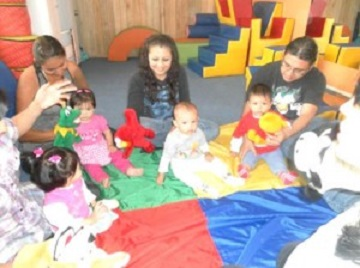

Listado de Actividades
|

Estimulación Trempana |
Se la realiza a través de atención individual en el hogar conjuntamente con el responsable directo del cuidado del niño o niña, con herramientas técnicas que les permitan contribuir al desarrollo integral |

Talleres con los padres |
Esta actividad se la realiza una vez por mes. Se dictan charlas sobre el Cuidado de los niños y niñas, Maltrato familiar, etc. |

Visitas Individuales |
Esta actividad se la realiza una vez por mes. Para ver el entorno donde se desarrolla el niño niña. |